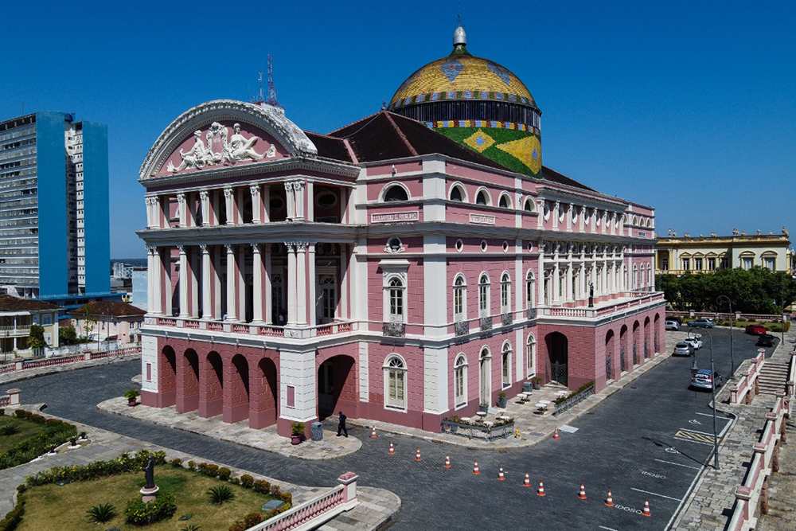
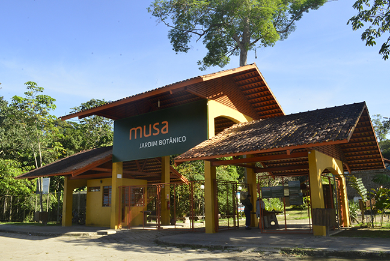
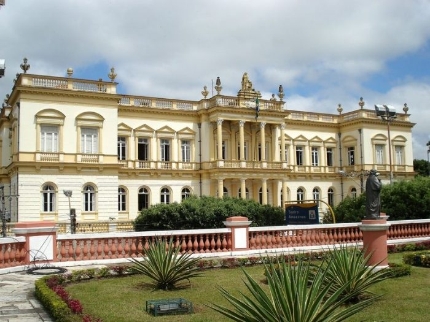
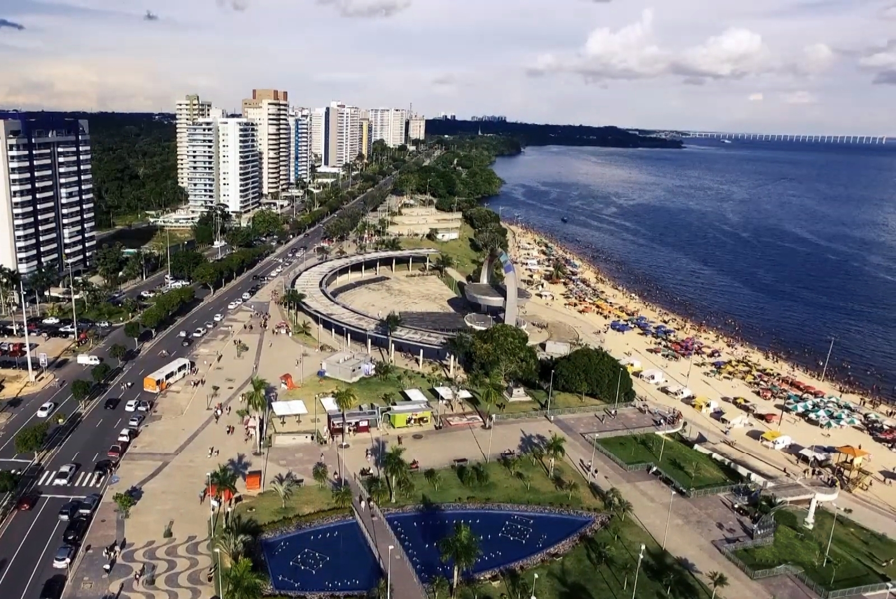
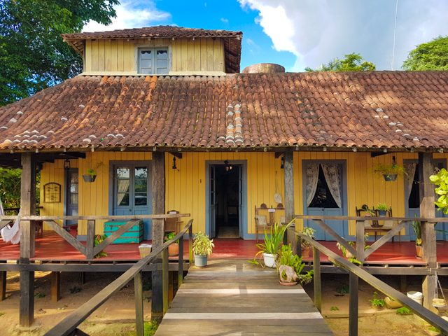
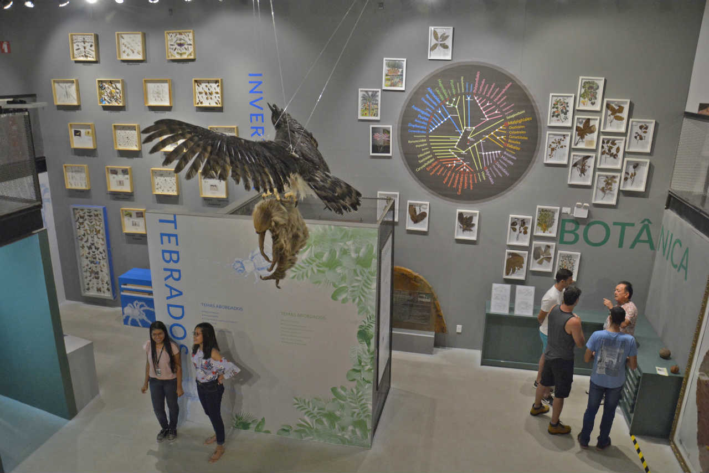
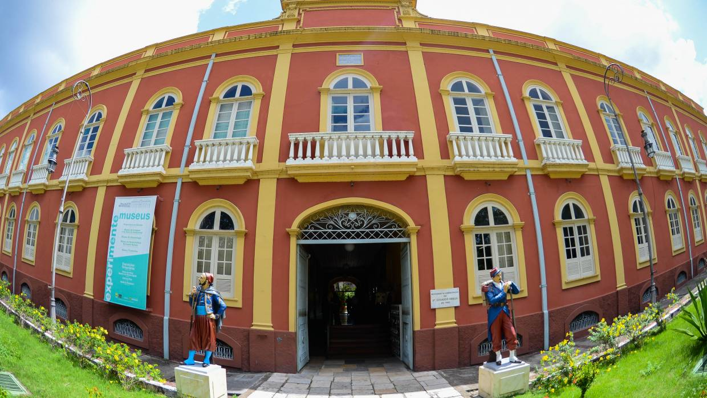
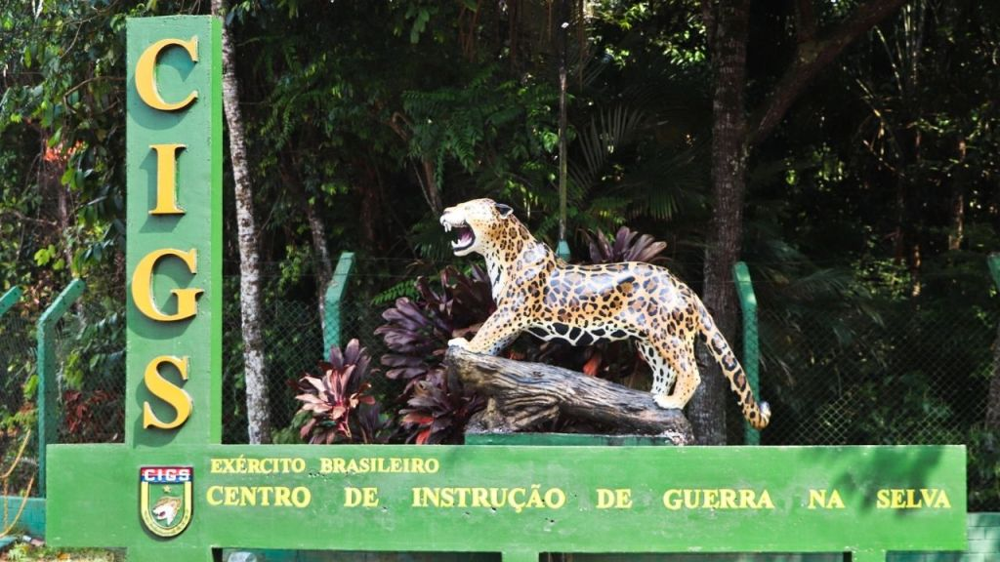

-
Teatro Amazonas
O Teatro Amazonas é um dos mais importantes teatros do Brasil e o principal cartão-postal da cidade de Manaus. Localizado no Largo de São Sebastião, no Centro Histórico, foi inaugurado em 1896 para atender ao desejo da elite amazonense da época, que idealizava a cidade à altura dos grandes centros culturais. É amplamente considerado como um dos mais belos teatros do mundo.
Clique aqui para direções -
MUSA
O Jardim Botânico de Manaus – Adolpho Ducke é considerado o maior fragmento de floresta preservada dentro de área urbana do Brasil. Possui 5 km² distribuídos em uma faixa de 500 metros de largura por 6 km de comprimento ao longo da borda sul e 4 km ao longo da borda oeste da Reserva. No jardim, também se encontra o Museu da Amazônia. É necessário ir de sapato fechado/tênis.
Clique aqui para direções -
Palácio da Justiça
O Palácio da Justiça é um prédio histórico brasileiro localizado na avenida Eduardo Ribeiro. Está situado exatamente atrás do Teatro Amazonas e conta com mais de 2 mil metros quadrados de área edificada em alvenaria de pedra e tijolo. Construído no século XIX para atender às instalações do Poder Judiciário do Estado na época.
Clique aqui para direções -
Praia da Ponta Negra
A Praia da Ponta Negra é uma praia urbana do município de Manaus, capital do estado do Amazonas. Localizada às margens do rio Negro, é um dos principais cartões-postais da cidade. Possui orla urbanizada, quadras para prática de esporte e um anfiteatro, onde são realizadas apresentações musicais, espetáculos teatrais e outras atrações, tornando-a um dos principais pontos turísticos da capital amazonense.
Clique aqui para direções -
Museu do Seringal
O Museu do Seringal Vila Paraíso, localizado no Igarapé São João, na área rural de Manaus, reproduz um seringal do final do século XIX e início do século XX, época do ciclo da borracha do Amazonas. É possível conhecer desde o processo de produção das pelas de borrachas até a diferença latente entre o modo de vida do seringueiro, e a do seringalista.
Clique aqui para direções -
Bosque da Ciência
O Bosque da Ciência é um espaço dedicado à divulgação cientifica, educação e lazer, que abriga uma vegetação florestal, animais da fauna amazônica de vida livre e atrativos para a visitação turística. Possui uma área de aproximadamente 13 (treze) hectares, e está localizado no perímetro urbano da cidade de Manaus, na Zona Central - Leste. O Bosque foi inaugurado em 1º de abril de 1995, pelo INPA.
Clique aqui para direções -
Palacete Provincial
O Palacete Provincial está localizado no Centro Histórico da cidade de Manaus, capital do estado do Amazonas. É um imóvel centenário impregnado de importantes fatos ligados à vida social e política do povo amazonense. Na atualidade, o prédio abriga um conjunto de 5 museus, sendo eles de diferentes linguagens: Museu de Arqueologia, Museu da Imagem e do Som, Museu de Numismática do Amazonas, Museu Tiradentes e a Pinacoteca do Estado do Amazonas.
Clique aqui para direções -
Encontro das Águas

O Encontro das Águas é um fenômeno que acontece na confluência entre o rio Negro, de água preta, e o rio Solimões, de água barrenta, onde as águas dos dois rios correm lado a lado sem se misturar por uma extensão de mais de 6 km. É uma das principais atrações turísticas da cidade de Manaus. Os fatores para isso ocorrer na região variam desde questões geológicas, climáticas, termais ou até mesmo o tamanho ou a acidez dos rios.
Clique aqui para comprar o passeio -
Zoológico do CIGS
O zoológico, criado e administrado pelo Exército Brasileiro, aloja 469 animais, sendo 52 mamíferos, 33 aves, 107 répteis e 265 peixes, totalizando uma riqueza de 68 espécies. Entre os animais que podem ser observados pelos visitantes estão o macaco prego, a onça-pintada, o jacaré e aves típicas da região. Inaugurado em março de 1967 e possui área coberta por vegetação amazônica. Por isso, o zoológico recebe a visita de animais de vida livre, que, às vezes, podem ser avistados durante a visita.
Clique aqui para direções